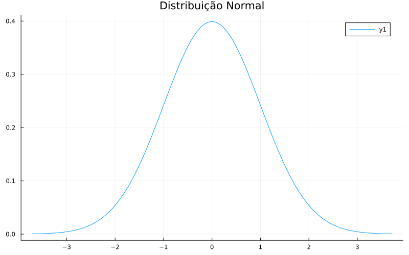
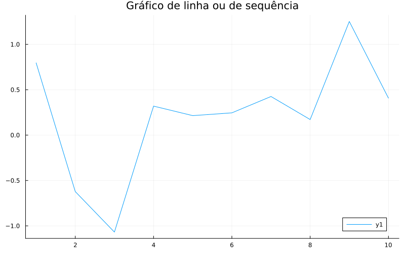
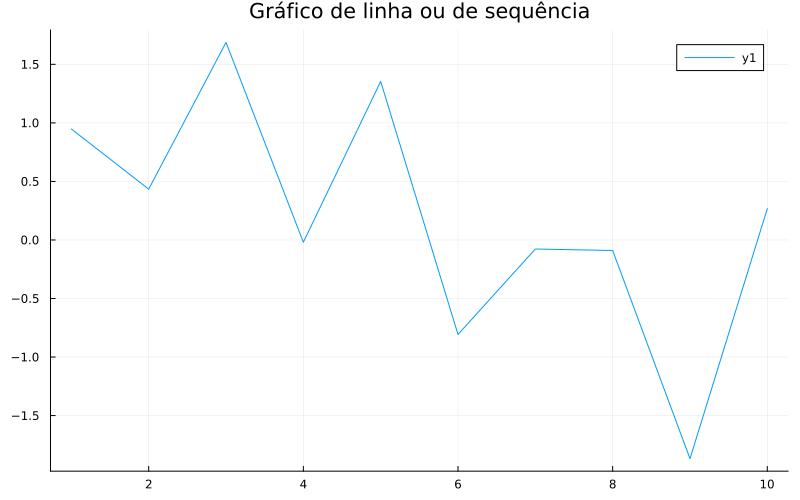
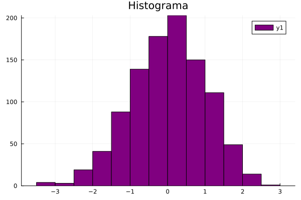
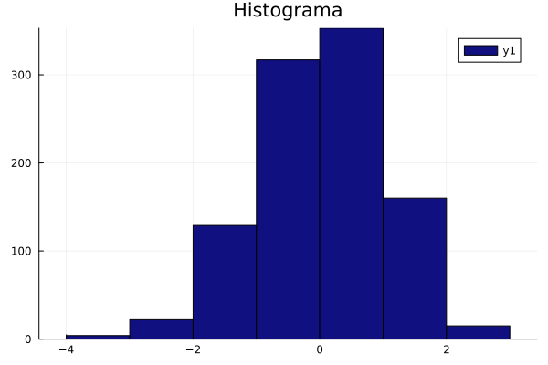
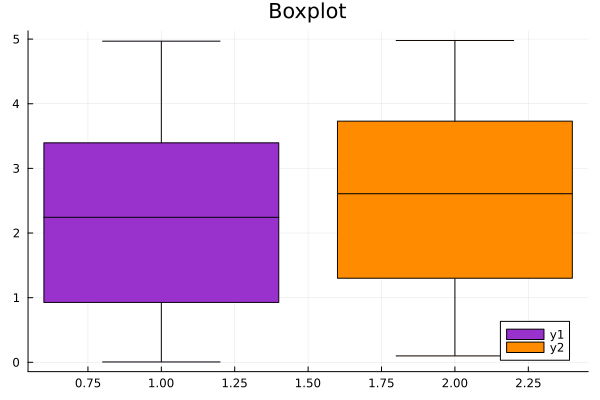
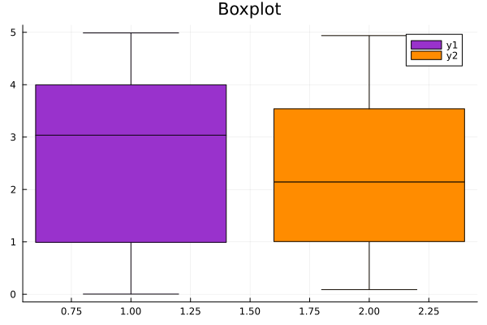

![]()
Pkg.add("Plots")
using PlotsGráficos em Julia: primeiros passos
Gráficos
Tão importante quanto desenvolver, implementar e aplicar modelos/metodologías é saber comunicar os resultados de forma clara e acessível para o público-alvo. E que melhor forma de fazer isso do que com visualizações didáticas e informativas? Neste tutorial, você aprenderá a criar gráficos básicos em Julia com o pacote Plots.jl e outras bibliotecas auxiliares.
Introdução
Lidar com diferentes linguagens de programação faz parte do dia a dia de pesquisadores, desenvolvedores e usuários finais nas áreas de STEM (Science, Technology, Engineering and Mathematics). No entanto, tão importante quanto desenvolver, implementar e aplicar modelos ou metodologias é saber comunicar os resultados de forma clara e acessível ao público-alvo. E nada melhor para isso do que visualizações didáticas e informativas.
Embora existam excelentes ferramentas para visualização de dados, como o ggplot2 do R e o seaborn do Python, é sempre útil saber como produzir gráficos, mesmo que básicos, diretamente na linguagem em que o código principal está sendo desenvolvido.
Neste tutorial, você aprenderá a criar visualizações básicas em Julia utilizando o pacote Plots.jl, além de conhecer algumas bibliotecas auxiliares que tornam esse processo mais eficiente e versátil.
Como criar os gráficos?
Para instalar o pacote principal e carregar seus comandos no ambiente, execute as seguintes linhas de código:
Lembre-se que precisamos apenas instalar o pacote uma única vez, mas chamá-lo em cada sessão que formos utilizá-lo.
Também utilizaremos os pacotes Distributions.jl e StatsPlots.jl para permitir a criação de gráficos com dados simulados e utilizar algumas distribuições de probabilidade. Para instalá-los e carregá-los, use:
Pkg.add("Distributions")
using Distributions
Pkg.add("StatsPlots")
using StatsPlotsObservação: Uma boa prática em
Juliaé carregar os pacotes um por um, logo no início do script, seguindo a ordem alfabética. Isso torna o código mais organizado, facilita a leitura e a identificação de dependências. Por exemplo:
using Distributions
using Plots
using StatsPlotsGráfico de Densidades
Um dos gráficos mais básicos (e úteis) para visualização de dados é o gráfico de densidades. Vamos gerando um gráfico de densidade da distribuição Normal com média 0 e variância 1. Para isso, execute:
plot(Normal(0,1), title = "Distribuição Normal", size = (800, 500))
Outras distribuições contidas no pacote:
- Bernoulli(\(p\))
- Beta(\(\alpha\), \(\beta\))
- Binomial(n, p)
- Cauchy(\(\mu\), \(\sigma\))
- Exponential(\(\theta\))
- Gamma(\(\alpha\), \(\gamma\))
- Poisson(\(\lambda\))
- Uniform(\(a\), \(b\))
- TDist(\(\nu\))
Você pode conferir a documentação completa das funções no site oficial de Julia.
A função plot() também pode ser utilizada para criar gráficos de linha ou de sequência:
plot(randn(10), title = "Gráfico de linha ou de sequência", size = (800, 500))
Gráfico de Dispersão
Também é possível fazer um gráfico de dispersão (scatterplot) com o código abaixo. Neste exemplo, geramos valores em x de 0 a 10 com um espaçamento de 0,5 entre eles e calculamos y como o logaritmo de cada valor de x. Além de personalizar o título e o nome dos eixos, é possível controlar a exibição da legenda — o padrão é mostrar legend = auto, mas você pode ocultá-la com legend = false.
x = 0:0.5:100.0:0.5:10.0y = log.(x);
scatter(x, y, title = "Gráfico de Dispersão", xlabel = "x", ylabel = "log(x)", legend = false)
Observação: o operador \(\cdot\) (dot), aplica a função \(\log()\) a cada elemento do vetor
x. O “;” evita que a variávelyseja impressa (como aconteceu com a variávelx).
Histograma
Outro recurso valioso na visualização de dados é o histograma, ideal para visualizar a distribuição de uma variável. Vamos construí-lo a partir da criação de uma variável x equivalente a 1000 números aleatórios de uma distribuição Normal(0, 1), executando o seguinte bloco:
x = randn(1000);
histogram(x, title = "Histograma", color = :purple)
Note que é possível customizar o número de intervalos (bins = 100, por exemplo) do seu histograma e modificar sua cor base. No exemplo abaixo, a cor é definida por nome (:purple), mas você também pode usar códigos hexadecimais — por exemplo, color = "#800080" produz o mesmo tom de roxo.
histogram(x, title = "Histograma", bins = 10, color = "#111080")
Boxplot
Para os estatísticos e cientistas de dados, o pacote Plots.jl oferece suporte ao conhecido boxplot, uma ferramenta eficaz para resumir estatísticas, ver assimetrias e identificar outliers. Ao executar o código abaixo, estaremos gerando dois vetores de 50 números aleatórios cada que, multiplicadas por 5, vão compor o conjunto de dados y.
y = 5 * rand(50, 2);
size(y)(50, 2)boxplot(y, title = "Boxplot", color = [:darkorchid :darkorange])
Note que para especificar cores manualmente, basta listar os nomes sem vírgula entre eles, tal qual no bloco acima. Esse detalhe é importante quando seus dados estão organizados em colunas no mesmo array. Abaixo veremos quando devemos incluir a vírgula.
Gráfico de Pizza
Tudo bem se você preferir os gráficos de pizza, eles ainda têm seu charme! 🎂 O bloco a seguir cria um gráfico de pizza utilizando a paleta de cores :tab10, que já vem disponível por padrão no pacote Plots.jl.
Vamos supor que os institutos IMECC, IG, IFGW e IFCH tenham, respectivamente, 700, 600, 500 e 470 alunos. Nosso objetivo é representar essas quantidades como porcentagens em um gráfico de pizza, considerando o total de alunos dos quatro institutos como 100%.
z = ["IMECC", "IG", "IFGW", "IFCH"]4-element Vector{String}:
"IMECC"
"IG"
"IFGW"
"IFCH"alunos = [700, 600, 500, 470];
w = 100 .* alunos ./ sum(alunos)4-element Vector{Float64}:
30.837004405286343
26.431718061674008
22.026431718061673
20.704845814977972pie(z, w, title = "Quantidade de alunos por instituto", palette = :tab10)
Para escolher manualmente as cores de cada fatia do gráfico de pizza, você pode usar uma lista de cores assim como no boxplot. Mas cuidado! Aqui os dados não foram gerados em conjunto, mas sim em dois vetores separados. Assim, para substituir o argumento palette, a vígula entre os nomes é necessária.
color = [:darkorchid, :darkorange, :purple, :blue]Lembre-se de definir uma cor para cada categoria presente no seu conjunto de dados, para evitar que as cores se repitam no gráfico.
Gráfico de Barras
Para comparar valores entre diferentes grupos e categorias, podemos construir um gráfico de barras de estrutura semelhante ao seguinte:
num = ["A", "B", "C", "D", "E"]5-element Vector{String}:
"A"
"B"
"C"
"D"
"E"qnt = [100; 70; 100; 80; 60]5-element Vector{Int64}:
100
70
100
80
60bar(num, qnt, color = :seagreen)
Grids e Combinações
Uma ferramenta bastante utilizada na visualização de dados é a junção de gráficos distintos na mesma imagem para facilitar a comparação, ou sobrepor múltiplas curvas em um único gráfico para contrastá-las no mesmo plano. Se você deseja criar o famoso grid (também chamado de malha gráfica), Julia oferece soluções práticas.
h = range(0, 10, length = 100);
k = @. log(h);
j = @. exp(h);
plot(h, [k j], layout = (2, 1), legend = false, color = :green)
Na figura acima criamos um vetor h com 100 valores uniformemente espaçados entre 0 e 10, um vetor k correspondente ao logaritmo dos elementos de h, e j ao exponencial dos mesmos elementos. O argumento layout define a disposição dos gráficos na figura, no qual o primeiro número indica o número de linhas e o segundo o número de colunas do grid. Agora, vamos combinar essas mesmas informações em um único gráfico, ajustando j para que sua escala fique mais próxima à de k.
j2 = @. exp(h)/5000;
plot(h, k, label = "log", color = :green)
plot!(h, j2, label = "exp/5000", color = :steelblue, ls = :dash)
Note que além de ocultar ou exibir a legenda, é possível personalizar os rótulos (
labels) do seu gráfico e escolher diferentes estilos para as linhas das curvas.
Personalização de atributos
Caso nenhuma das customizações mostradas até agora seja suficiente para ilustrar seus dados de forma adequada, segue-se uma gama de opções adicionais para ajustar os atributos visuais do gráfico.
Cores e Paletas
Para explorar as cores nomeadas disponíveis na base do Julia e seus códigos RGB (uma tripla que representa a composição de vermelho, verde e azul), você pode acessar a lista oficial clicando em cores. Se você quiser diversificar as opções de paletas disponíveis, o pacote ColorSchemes pode ser adicionado à sua biblioteca:
Pkg.add("ColorSchemes")
using ColorSchemesO pacote conta com opções de paletas para usuários com Deficiência de Visão de Cores!
Estilo da linha
Os seguintes estilos podem ser determinados no argumento ls (line style) para customizar as curvas do gráfico:
:solid #linha sólida
:dash #tracejado
:dot #pontos
:dashdot #tracejado seguido de um ponto
:dashdotdot #tracejado seguido de dois pontosComo salvar o gráfico?
Por fim, você pode salvar o gráfico no diretório do seu projeto utilizando o seguinte comando:
p = plot(x, y)
savefig(p,"nome.png")Caso você não tenha atribuído o gráfico a um objeto p, é possível salvar a figura imediatamente após a criação do gráfico, omitindo o objeto.
plot(x, y)
savefig("meu_gráfico.png")Se fizer alterações no gráfico e quiser atualizar a imagem salva, basta executar novamente o comando savefig com o mesmo nome. A figura anterior será substituída pela versão atualizada no seu diretório.
Nota
Ferramentas de IA foram utilizadas para correção ortográfica e aprimoramento do texto.